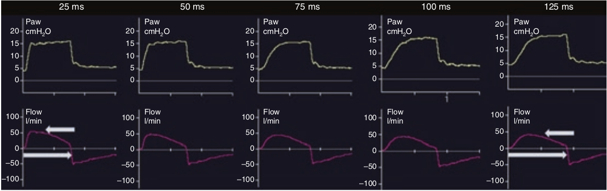

مدت زمان صعود فشار فاصله زمانی رسدن فشار از PEEP به PINSP در شروع دم می باشد. این زمان در اکثر مدهای کنترل قشاری قابل تنظیم است و باید طوری تنظیم شود که انتقال تنفس با نیاز بیمار و شرایط بالینی وی متناسب باشد. هر چه زمان صعود کوتاه تر باشد، شدت جریان حداکثر دمی بیشتر خواهد بود. از آنجا که آستانه حساسیت ترایگر بازدمی بصورت درصد از شدت جریان حداکثر دمی می باشد، تغییر مدت زمان صعود فشار، بر روی مدت زمان دم نیز تاثیر می گذارد.

در مورد طول مدت صعود فشار کدام جمله زیر غلط است؟
۱ - سرعت انباشته شدن فشار در ابتدای دم می باشد
۲ - هر چه سریعتر باشد بهتر است
۳ - روی شدت جریان حداکثر دمی تاثیر می گذارد
۴ - کار تنفس را تحت تاثیر قرار میدهد
۵ - می بایست بر اساس مکانیک و میل تنفس تنظیم شود